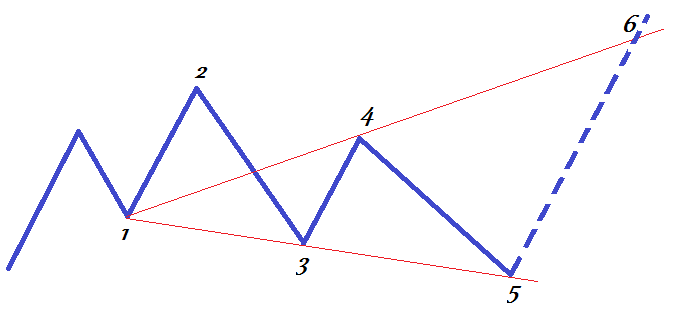
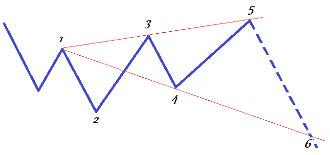
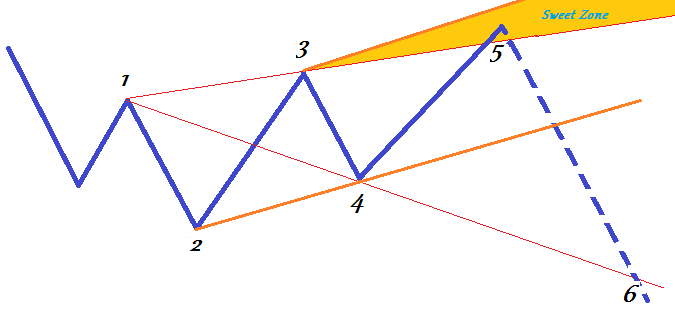
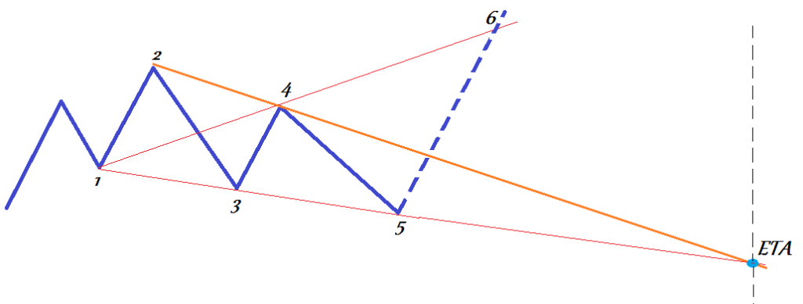
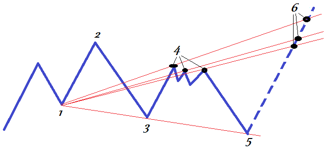
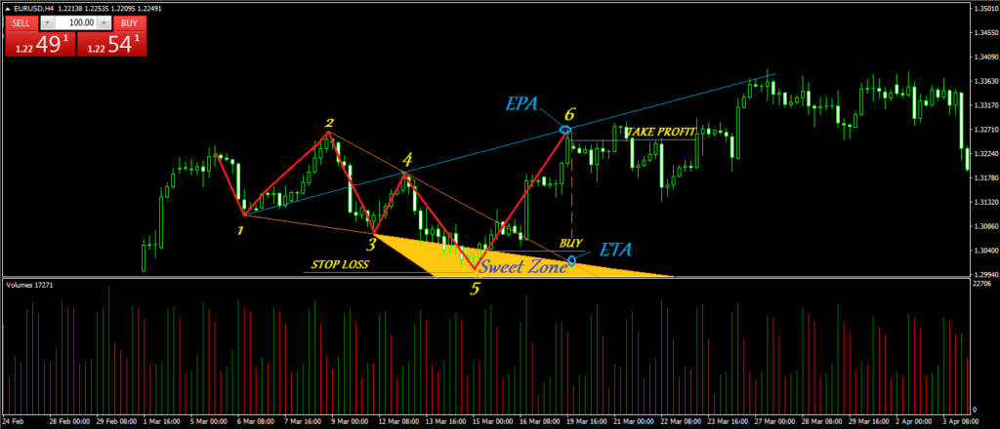

Как строить волны Вульфа
Построение волн Вульфа, в принципе, особой сложности собой не представляет. Однако оно требует некоторого опыта и внимательности. Перед тем как начать торговать по этому методу рекомендуется проштудировать ценовую историю за несколько предыдущих лет, с целью поиска и построения этих волн.
Бычья волна Вульфа
Давайте начнём с бычьей волны. Почему волна называется бычьей? Потому что итоговым аккордом данной волны идёт ценовое движение вверх (рост цены).

Как видите, базовая структура волны Вульфа состоит из шести точек соединённых пятью отрезками. Эти точки, а также вспомогательные отрезки, проведённые через них, должны удовлетворять определённым правилам. Вот эти правила:
Медвежья волна Вульфа
Эта волна называется медвежьей, поскольку её результирующим движением является движение цены вниз.

По сути, эта волна является не чем иным, как зеркальным отражением рассмотренной выше бычьей волны. Соответственно и все правила для неё, это отзеркаленные правила для бычьей волны:
Как торговать на волнах Вульфа
С теоретической частью мы разобрались, теперь давайте рассмотрим, как применять волны Вульфа на практике. Как уже понятно из вышесказанного, точкой покупки в бычьей волне и точкой продажи в медвежьей волне является точка 5.
То есть задачей трейдера является правильно идентифицировать волну Вульфа, дождаться образования точки 5 (как уже было описано, она образовывается на пересечении цены и луча соединяющего точки 1 и 3) и открыть позицию.
Ну и, в конце концов, трейдеру остаётся забрать свою прибыль, закрыв позицию в точке 6 (образованной пересечением цены и луча проведённого через точки 1 и 4).
Да, в общих чертах всё именно так, ничего сложного. Однако есть некоторые нюансы, которые мы сейчас и рассмотрим.
Нюансы входа в позицию
Первый из этих нюансов касается точки входа в позицию. Зачастую возникает такая ситуация, когда цена, что называется, протыкает луч 1-3. Получается так, что её разворот и, соответственно, формирование точки 5 образуются за пределами этого луча.
В данном случае говорят, что цена вошла в так называемую Sweet Zone (с англ. сладкая зона).

На рисунке показано графическое построение Sweet Zone. Для того чтобы определить границы этой зоны нужно провести две линии. Первая линия проводится через точки 2 и 4, а вторая линия проводится параллельно ей, через точку 3.
Условием для появления такой «сладкой зоны» является схождение лучей 2-4 и 1-3. Если эти лучи параллельны или расходятся, то никакой Sweet Zone не образуется.
Почему эта зона названа сладкой? Да потому что это самый предпочтительный момент для входа в позицию.
Нюансы выхода из позиции
Выход из позиции должен осуществляться по одному из следующих критериев (в зависимости от того какое событие случится раньше):
Выход по ориентировочной цене прибытия (EPA), это не что иное, как описанный выше выход в точке 6.
Выход по ориентировочному времени прибытия (ETA), это выход в момент времени соответствующий точке построенной следующим образом:

Как видите, точка ETA находится на пересечении лучей 2-4 и 1-3. В идеально сформированной волне Вульфа моменты выхода по ETA и EPA совпадают (то есть эти две точки лежат на одной вертикальной прямой). Однако найти такой идеальный паттерн в реальных условиях весьма затруднительно, поэтому следует осуществлять выход из позиции по тому моменту, который наступит раньше (либо это будет образование точки 6 (EPA), либо это будет достижение времени заданного точкой ETA).
Особенности формирования точки 4
Отдельно следует поговорить об особенностях формирования точки 4. Дело в том, что в данной области цена часто входит в небольшой флэт, она может нарисовать паттерн «прямоугольник» например. То есть возникает такая ситуация, когда невозможно однозначно идентифицировать точку 4. А если нет определённости с четвёртой точкой, то нет её и с точкой 6 (ведь точка 6 лежит на луче, проходящем через точки 1 и 4).
В этом случае предлагается следующее решение:

Критерии эталонной волны Вульфа
Хотя в реальности встретить полностью идеальную волну Вульфа, представляющую собой эталон, практически невозможно, тем не менее, чем ближе будет рассматриваемая волна к этому эталону, тем меньше будет вероятность получения трейдером ложного сигнала к открытию позиции.
Давайте рассмотрим критерии, которым должна соответствовать эталонная волна Вульфа:
Повторюсь, найти на графике такую волну Вульфа, которая бы удовлетворяла всем приведённым здесь условиям, довольно трудная задача. Однако, чем большему количеству указанных критериев будет соответствовать найденная волна, тем большей будет её потенциальная надёжность.
Стратегия торговли
Стратегия торговли
Итак, мы нашли на ценовом графике волну Вульфа. Проверив её по всем выше приведённым критериям, мы пришли к выводу о том, что она хоть и не идеальная, но всё же потенциально подлинная волна Вульфа. Я говорю потенциально, потому что это не завершённая волна, а волна, состоящая пока из четырёх точек (когда волна завершится, торговать на ней уже будет поздно).
Сейчас мы ждём формирование пятой точки волны, после которой следует входить в позицию. Пятая точка образуется на развороте цены, который, в свою очередь должен быть осуществлён либо на луче 1-3, либо в Sweet Zone.
Если разворот будет осуществлён дальше чем в Sweet Zone, то такую волну считаем ложной и торговлю по ней не ведём.

Пример стратегии торговли по волнам Вульфа (кликните для увеличения)
В нашем примере (на рисунке выше) разворот произошёл в Sweet Zone.
Для того чтобы удостовериться в истинности точки 5 (т.е. в истинности произошедшего разворота), мы открываем позицию на покупку (BUY) только на выходе из Sweet Zone.
Прибыль я рекомендую забирать чуточку раньше достижения ценой точки 6, а ордер STOP LOSS можно выставить либо на дальней границе Sweet Zone, либо сразу за точкой 5 (как в данном случае).
Кстати обратите внимание, что в данном случае выход осуществляется по EPA (то есть по достижении ценой точки 6), так как ETA находится дальше. В противном случае (если бы EPA находилась правее ETA) выход осуществлялся бы по достижении ценой временного значения соответствующего точке ETA.
Резюме
В общем и целом, волны Вульфа представляют собой достаточно надёжные паттерны, позволяющие торговать как на фондовом, так и на валютном рынках. Искать эти паттерны можно на графиках с любым таймфреймом (они показывают хороший результат вне зависимости от выбранного таймфрейма графика).
В принципе, волны Вульфа можно сделать основой торговой системы трейдера, однако не следует забывать о том, что любой паттерн технического анализа лучше всего работает в комплексе с другими его инструментами. Поэтому всегда ищите подтверждения сигналов, даваемых волнами Вульфа, от других индикаторов.